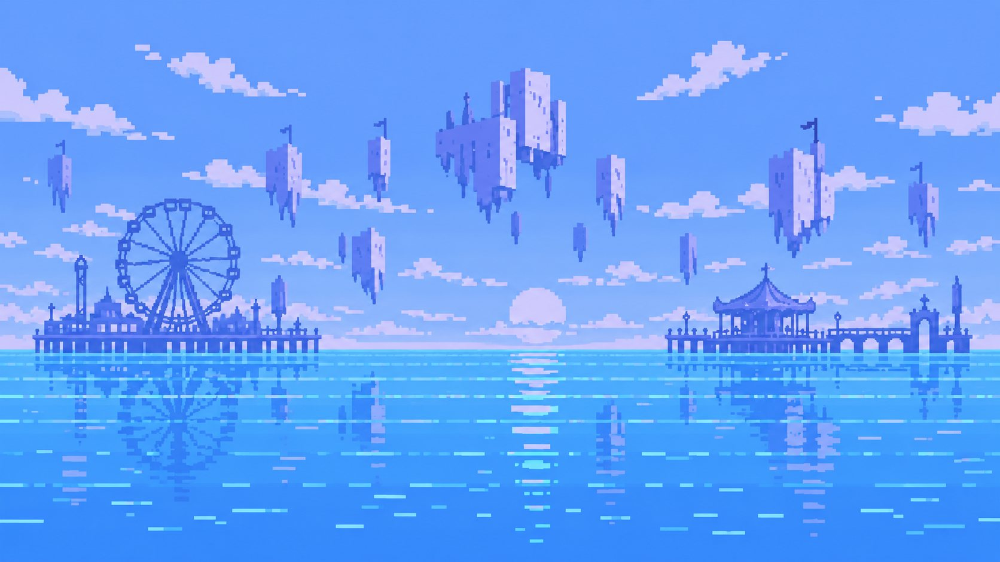

忘了自己是什么What Was I Again?
Memory Drift — 记忆漂移a game about forgetting
遗忘是缺陷，
还是自我保护？Is forgetting a defect,
or a form of self-protection?
项目从“害怕遗忘、反复查看数字记录”的习惯出发：我们存下越来越多的照片，却越来越依赖反复确认。当别人都说出同一个答案时，我们记得的究竟是过去本身，还是一个让人感到确定的版本？It starts from the habit of fearing forgetting and checking digital records again and again. We keep more and more photos, yet rely more on confirmation. When everyone around us gives the same answer, are we keeping the past itself — or a version that feels certain?
design rule
不打分、不判定对错、不诊断“虚假记忆”。只把差异摆在观众面前。No score, no right or wrong, no diagnosis of “false memory”. Just put the differences in front of the visitor.
Five strips.
开场照片被切成五条互补的竖向碎片，固定在 1–5 号位置。整条路上会出现三组碎片：拾取能填补空位或修复模糊的那一片，但永远不会凭空生成第五个人。The opening photo is cut into five complementary vertical strips, fixed in positions 1–5. Three sets appear along the route: a pickup fills its empty slot or repairs a blurred one — but never invents a fifth person.
收集Collect
保留下来的碎片，就是结尾时你能看到的照片。The pieces you keep are the photo you get to see at the end.
撞击 → 遗失Collision → lose
撞到障碍会移除最新的一片。A collision removes the newest retained piece.
干扰 → 模糊Interference → blur
粉色干扰让最旧的、仍清晰的一片变得模糊。Pink interference obscures the oldest piece that is still clear.
按住保护Hold to protect
按住 0.7 秒，挡下一次冲击或信号。新手练习只教这一件事，不带入正式游戏。Hold for 0.7 s to block one hit or signal. An optional practice teaches just this, and does not carry over.

琥珀色相框、珊瑚色障碍、粉色干扰、薄荷色保护——画面提示与暂停指南共用同一套剪影。Amber frames, coral hazards, pink interference, mint protection — the same silhouettes as the pause guide.

完整流程：看照片 → 第 1 问 → 行走收集 → 两人说“五个” → 第 2 问 → 第 3 问 → 回看碎片 → 揭晓原图。Flow: look → Q1 → walk and collect → two people say “five” → Q2 → Q3 → review pieces → reveal the original.
Two people say five.
路途尽头有两个虚构角色 Lin 和 Rowan，他们彼此回应，并准确引用观众的第二次回答：答“五”会加强共识，答“四”会被挑战，答“三”会引入怀疑，“不确定”不被算作同意。At the end of the road two fictional characters, Lin and Rowan, reply to each other and quote the visitor's second answer exactly: five strengthens agreement, four challenges it, three introduces doubt, and “Not sure” is never counted as agreement.
LIN我记得是五个人，站在蓝天下。I remember five people, under a blue sky.
ROWAN你刚才也说了五个吧？You said five too, didn't you?
↑ 示意，并非游戏原文。↑ Illustrative, not the in-game script.
另一边的“记录墙”是真实数据：这台装置上最近 30 位完成体验的观众的回答，只显示人数统计；超过 30 次后旧的记录会被遗忘，至少 5 次才会显示——记录本身也在遗忘。The record wall is real: counts only, from the last 30 finished visits on this machine, shown once at least five exist and forgotten after that — the record itself forgets.
Reveal, don't judge.
回看你留下的碎片Review what you kept
丢失和模糊的部分保持不可见，这一步没有“原图”标签可以偷看。Missing and blurred strips stay unavailable; there is no original-image tab to peek at.
确认后揭晓原图Confirm to reveal
此后才可在原图、碎片与“你的人数”之间切换；按住对比键临时查看原图。Only then can you switch between Original, Fragments and Your count, or hold Compare to see the original.
一张结束卡One closing card
“五”从哪里来、什么是曼德拉效应、此前有多少观众说了五、你忘记了几片——最后留下一个问题：遗忘，会不会也有价值？Where “five” came from, what the Mandela effect is, how many earlier visitors said five, how many pieces you forgot — and one open question: might forgetting have value?
One stick, six buttons.
展陈机台为一根摇杆加两排三个按钮，CRT 电视以 kiosk 模式全屏运行：黑色边框、隐藏光标、预留安全边距以防过扫描裁切。按钮可在游戏内重新映射。The cabinet has one joystick and two rows of three buttons. A CRT TV runs the game in kiosk mode: black surround, hidden cursor and a safe margin against overscan. Buttons can be remapped in-game.
建议的功能布局；实体按钮仍需逐一校准，硬件兼容性尚未在真机上验证。Suggested layout; each physical button still needs calibration, and hardware compatibility is not yet verified on the device.
Memory Tunnel.
同一项目的 TouchDesigner 影像部分：照片、点线与数字构成持续变化的纵深空间，把记忆碎片转译为流动的隧道。The TouchDesigner film of the same project: photographs, points, lines and numbers form a shifting depth, translating memory fragments into a moving tunnel.
03:30 / TOUCHDESIGNER / 单独打开视频Open video ↗
- 音乐：PYNCHON — James Gargette (cinameng)，CC0Music: PYNCHON — James Gargette (cinameng), CC0
- 音效：Kenney — Impact Sounds、Digital Audio，CC0Sound effects: Kenney — Impact Sounds, Digital Audio, CC0
- 像素美术为本项目生成与制作的原创素材Pixel artwork generated and prepared for this project